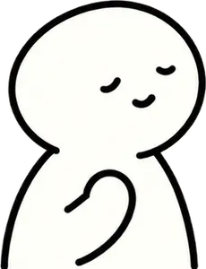

프롤로그
트라우마 리터러시 게임
하루의 여정
돌멩이가 있어도, 길은 계속돼요
하루는 무언가를 잃어버린 채 길을 나섰어요. 다섯 곳을 지나며 트라우마를 알아 갈수록, 하루가 찾는 것도 조금씩 모습을 드러내요.
- 5곳의 장소
- 20문제
- 15분 안팎
화면 전환과 하루의 움직임이 약 1.7배 느려져요. 문제 시간 제한은 원래 없어요.
트라우마에 대한 지식을 다루는 교육용 게임이에요. 진단·치료 도구가 아니고, 나의 경험을 묻거나 저장하지 않아요. 힘들면 언제든 쉬어가거나 을 열어 보세요. · 캠페인 만화 ‘돌멩이가 있어도’에서 시작됐어요
© 2026 하루의 여정팀(박서예, 박지현, 임수연, 하지민) · 연구·교육 목적 외 무단 복제·배포 금지
시연 모드 · 기록과 저장을 하지 않아요
출발 전 · 하루의 가방 점검
지금 내 생각은?
트라우마에 대해 지금 어떻게 생각하는지 열 문장에 답해 주세요. 맞히는 시험이 아니에요. 점수에 들어가지 않고, 여정이 끝나면 처음 생각과 비교해서 무엇이 달라졌는지 보여 줘요. 잘 모르겠으면 ‘모르겠어요’를 골라도 돼요.
같은 문장이 다섯 장소에서 다시 나와요. 장소마다 두 문장씩이에요.

오늘의 선택 · 쉬어가기
오늘은 여기까지.
하루도 잠시 쉬어 가요.
지금까지 푼 문제와 모은 글자 조각은 이 기기에 저장돼요. 다음에 ‘이어하기’로 이어서 걸을 수 있어요.